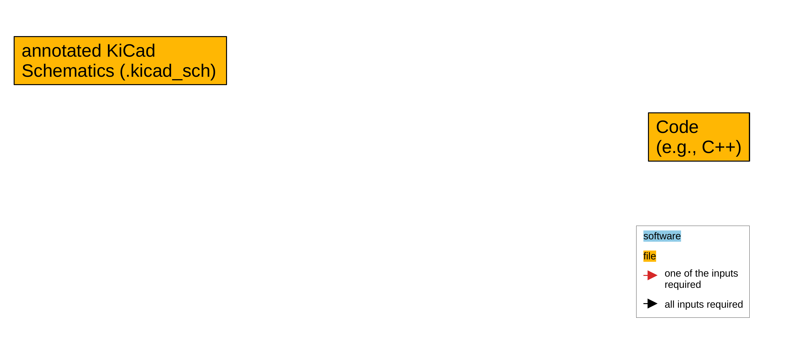
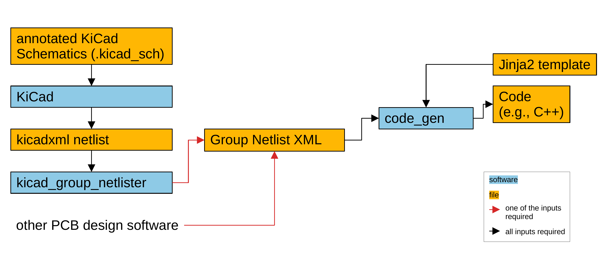
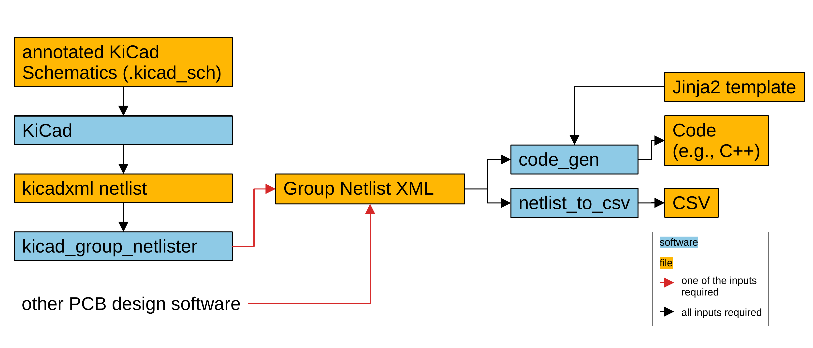
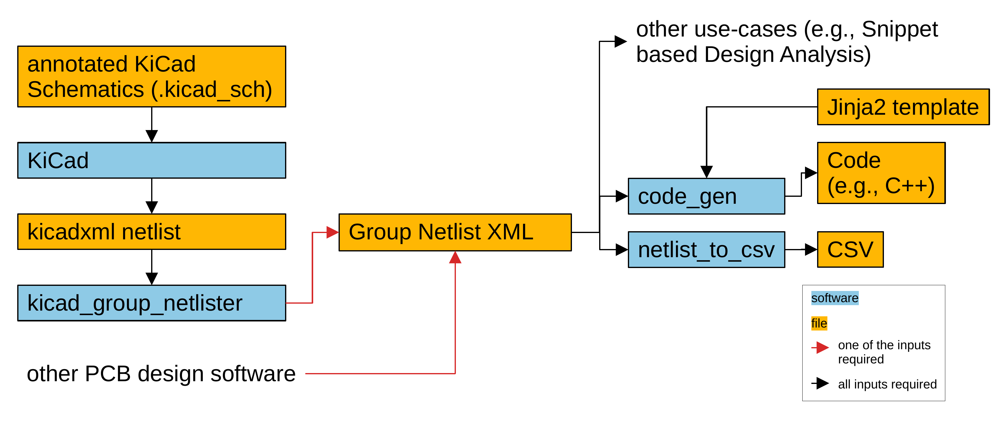
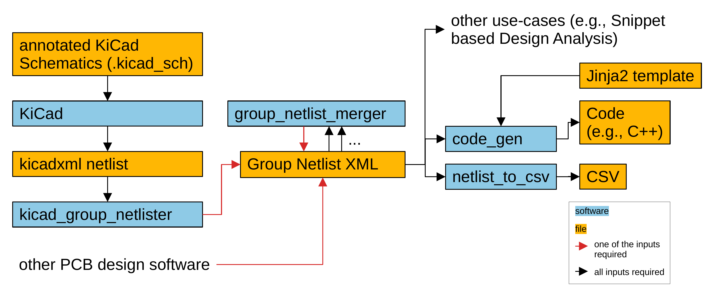
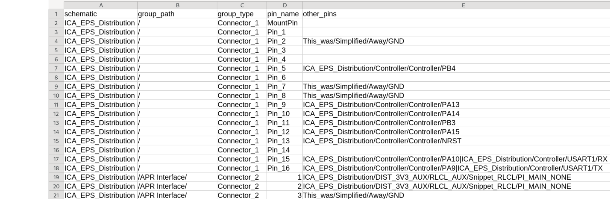
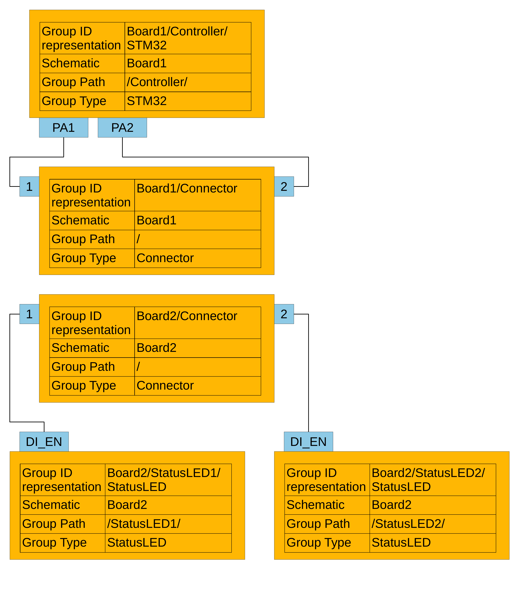

kicad_firmware_generation
Christopher Besch • 18th February 2026
kicad_firmware_generation
Automatic Firmware Generation for Spaceflight Hardware based on Schematics
Background
what DLR are doing, why challenging, why EPS important, why not one days work unknown requirementsPLUTO: a 6U Cubesat

Credit: DLR (CC BY-NC-ND 3.0)
PCDU (Power Conditioning and Distribution Unit)
Contribution
- Group Netlist specification
- kicad_firmware_generation implementation
- kicad_group_netlister
- code_gen
- netlist_to_csv
- group_netlist_merger







kicad_group_netlister
- group components
- annotations

Group Netlist
- XML document
- Python library
- Snippet based Design Analysis
code_gen
- Very small
- Uses common library
- Jinja2
- Private logic in template
netlist_to_csv
- Very small
- Harness Specification
- Simplify info; focus on certain things only

group_netlist_merger
- Merge multiple PCBs
- Group Netlist very good place


Evaluation
how did we apply it?kicad_firmware_generation
- some summary